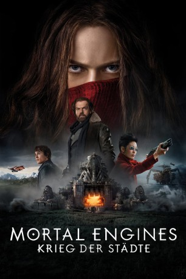

gesehen am 13.04.2019
gesehen am 13.04.2019Alternativ: Mortal Engines (Englischer Titel) gesehen am 13.04.2019
 
 IMDB-Wertung: 6.2 / 10
IMDB-Wertung: 6.2 / 10  Metascore:
Metascore: 
Vor Tausenden von Jahren verwüstete eine gewaltige Katastrophe die Erde, doch die Menschheit hat sich ihrer neuen Umgebung längst angepasst. Gigantische Metropolen auf Rädern erhoben sich aus den Trümmern der untergegangenen Zivilisation. Auf der Suche nach den letzten Ressourcen fahren sie über die verdörrte Steppe und verschlingen gnadenlos die kleineren Städte. Zu den großen Metropolen gehört auch London als einer der gewaltigsten rollenden Kolosse. In diesem unerbittlichen Kampf trifft der unscheinbare Tom Natsworthy in einer schicksalshaften Begegnung auf die gefährliche Flüchtige Hester Shaw – zwei Gegensätze prallen aufeinander, zwei Menschen, deren Wege einander nie hätten kreuzen sollen. Sie schmieden eine überraschende Allianz, die über den Fortgang der Menschheitsgeschichte bestimmen könnte.
Jahr: 2018
Dauer: 128 Minuten
FSK: 12
Land: Neuseeland Studio: UPITonspuren: DTS - ,
Untertitel: Deutsch, Englisch,
Auflösung: 1080p (1920x804) Größe: 11571 MB
Genre: Action, Thriller, Sci-Fi, Abenteuer, Fantasy
Regisseur: Christian Rivers
Drehbuch: Fran Walsh, Philippa Boyens, Peter Jackson, Philip Reeve
Soundtrack: Junkie XL
Darsteller:
Datei: X:\2018(G-M)\Mortal Engines Krieg der Städte (2018, FSK12, 1920x804).mkv seit 03.04.2019
Festplatte: HD 2018(G-Z)-2019(A-Z)
 Es gibt insgesamt 138 Filme in der Gruppe '2018(G-M)'
Es gibt insgesamt 138 Filme in der Gruppe '2018(G-M)'